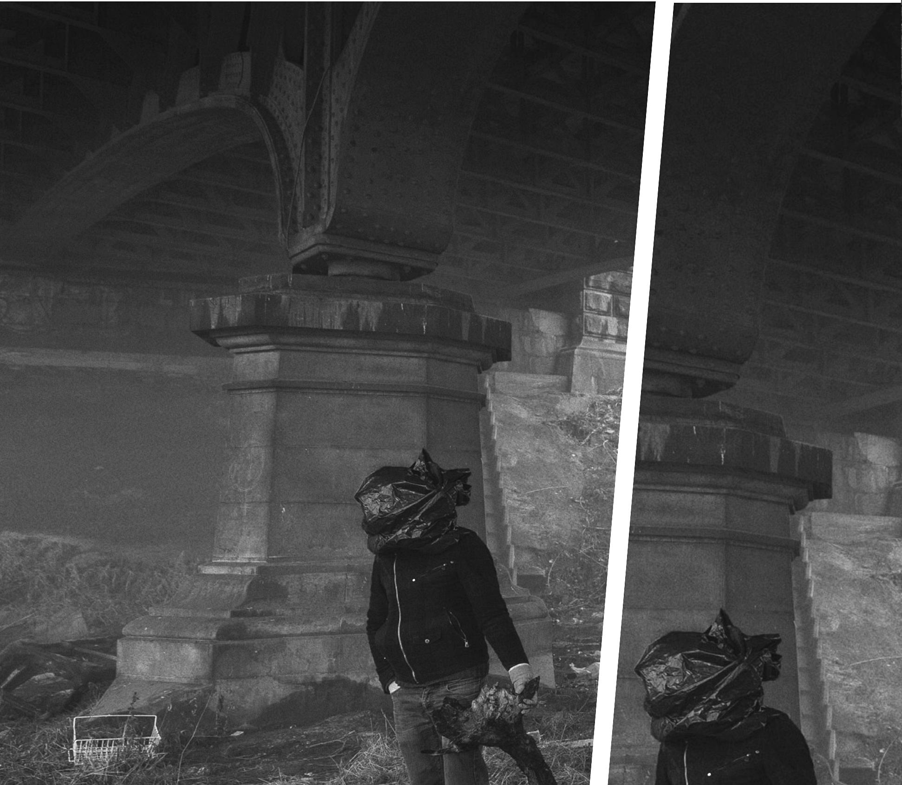
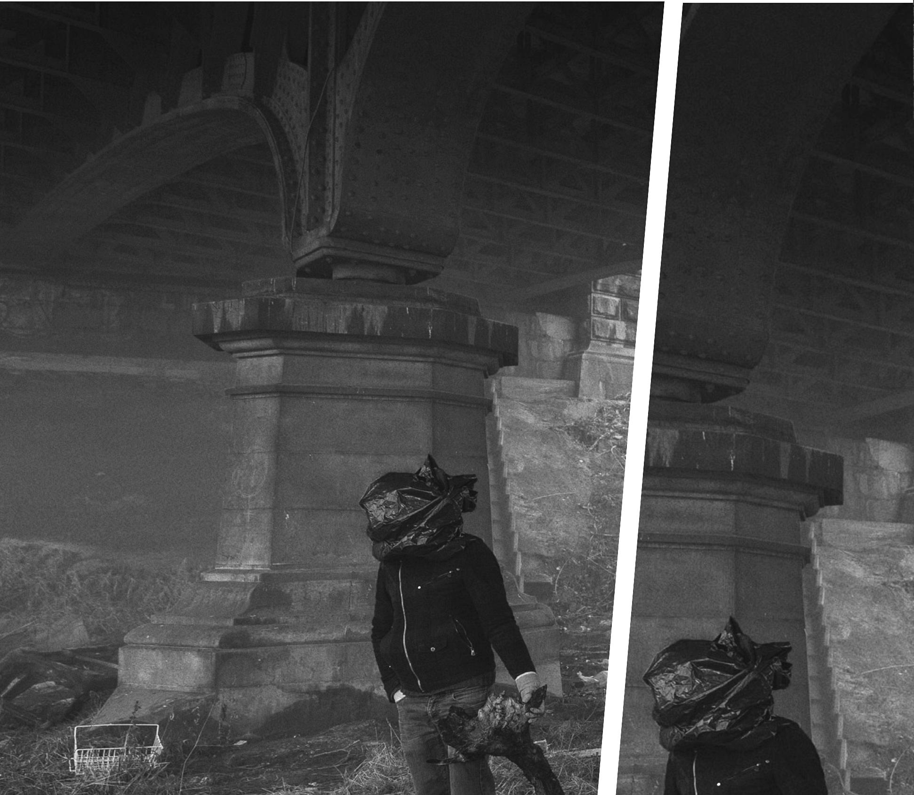

Saison
2013-2014
Et si l’alternatif devenait une norme et la norme une alternative ?
Et si…
Et si c’était possible ?
What if…
Et si les extraterrestres c’étaient simplement nous, le Nous du futur communiquant au Nous du passé ?
Wat als…

Et si l’alternatif devenait une norme et la norme une alternative ?
Et si c’était possible ?
Et si les extraterrestres c’étaient simplement nous, le Nous du futur communiquant au Nous du passé ?
Bricolons de l’espace pour l’humain, et le temps qui va avec, le temps X des frères Bogdanoff par exemple.
Et si de petits pouvoirs impliquaient de grandes responsabilités ?
L’art des possibles, c’est considérer nos imaginaires et nos histoires comme les fondations réelles et concrètes de toutes les vies parallèles qui s’offrent à nous. « Et si tu n’existais pas, dis-moi pourquoi j’existerais ? » Et oui, si vous n’existiez pas, pourquoi les théâtres existeraient ? Vous connaissez la chanson, un spectacle sans spectateurs, c’est un peu comme une politique culturelle sans vision, comme le berger sans ses moutons, comme l’Histoire sans sa genèse, …
Et si la Balsamine se réinventait pour vous, chaque saison ? 2013-2014, c’est la Balsa au pays de l’uchronie, au sens le plus strict, celui de l’altération.
Un exemple ?
Et si Martine Wijckaert (fondatrice de la Balsamine) n’était pas entrée dans cette friche, dans cette caserne à l’abandon ? Et si elle n’avait pas, avec ses petits bassinets, recueilli les fuites de ce lieu abandonné ? Et si elle n’avait pas décidé de rester dans ce lieu comme dans une seconde maison ?
Et si les poules avaient des dents, les traiterions-nous autrement ?
Et si nous devenions les héros de notre super-vie ?
Et si le dictionnaire, avec lequel elle recherchait le nom du lieu, en tombant sur le sol ne s’était pas ouvert à la lettre B, sur la page répertoriant cette fleur sauvage, la balsamine, où en serions-nous aujourd’hui ?
Et si en se sortant la tête de l’eau, on parvenait à respirer ?
Et si on arrêtait de se mettre sous pression ?
Quelle serait l’Histoire de ce temps qui n’existe pas ? Une autre question nous brûle les lèvres : et si le bras de Martine Wijckaert avait été plus long, comme celui d’un des 4 fantastiques, combien d’autres portes aurait-elle pu ouvrir sur son imaginarium ? Tout ceci confine à l’émerveillement.
Et si on passait à l’action, man and woman ?
Martine Wijckaert est aujourd’hui artiste associée, artiste indissociable de notre présence en ses murs. Et si sa prochaine création Trilogie de l’enfer était le spectacle incontournable ? Alors pourquoi se priver de cette réalité si belle ? Les créations susceptibles de changer le regard ne sont finalement pas aussi nombreuses qu’on pourrait croire ! En soi, la Balsa est un non-lieu de non-temps où le public comme l’artiste sont dépositaires du sens et du rythme de l’œuvre. Et si l’expérience esthétique était à portée de tous ?
Et si au lieu de vouloir rencontrer toujours le troisième type, on commençait par le premier ?
Enfin, et pour finir avec toutes ces suppositions, imaginons seulement que cette nouvelle saison théâtrale à effet papillon, ce grand spectacle de variétés contemporaines, soit le départ d’une aventure commune, où le plaisir passe par la découverte de ces multivers artistiques.
Il est temps de commencer la lecture de ce programme qui, nous l’espérons, vous uppercutera :
Bam Boum Wizz Pimmmm
Fabien Dehasseler et Monica Gomes,
co-directeurs artistiques
Le 19 septembre
Dès
19h
Vernissage des photos de saison 2013—2014 d'Hichem Dahes
À 20h30
Conférence d’Isabelle Stengers, « Dis-moi comment tu racontes, je te dirai à la construction de quoi tu participes. »

Du 25 septembre au 5 octobre à 20h30
Amphithéâtre


Première tentative d’échange artistique entre humains et non-humains, Fusée est conçu pour un public majoritairement extra-terrestre.
Déployant une inventivité perverse et musicale, explorant l’aspect relatif de la normalité et de l’obscénité, Fusée questionne en dernier ressort les limites de l’utilité et de la représentation.
Et si les extraterrestres n’étaient pas nos amis ?

Ne serait-ce pas leur rendre la monnaie de leur pièce que de les torturer à leur tour ?

Et si tout cela était de l’ordre du préventif ?
Et si nous tentions ensemble cette expérience ?
Les extraterrestres sont-ils nos amis?
Oui, les extraterrestres sont nos amis
17%
Non, les extraterrestres sont ennemis
4%
Non, nous leurs sommes totalement indifférents
4%
Non, ils ne savent même pas que nous existons
0%
Non, pour eux, nous sommes des cobayes ou des sujets d'étude
31%
Les extraterrestres? Quels extraterrestres?
14%
Autre proposition
26%
« Quoi de plus beau et de plus troublant que de torturer en direct un Glöörgh,
fleur mutante extra-terrestre aussi mystérieuse que redoutable ? »
Ludovic Barth, metteur en scène de Fusée

Après les succès de J’ai gravé le nom de ma grenouille dans ton foie et de DTC (on est bien), la jeune compagnie Clinic Orgasm Society s’est lancée dans un triptyque : Pré-Blé-Fusée, 3 spectacles indépendants et déjantés qui déplacent les limites de la normalité et qui se jouent de nos répulsions-fascinations.
Aussi, après Pré au Varia, Blé au Manège.Mons , voici Fusée à la Balsa, vers l’insoutenable et au-delà !
Fusée sera ensuite jouée au Grand Bleu à Lille et au PBA+ Eden à Charleroi. Pré et Blé, les deux premiers opus de la trilogie, seront à nouveau visibles au Théâtre Varia en février 2014.
Une production de la Clinic Orgasm Society en coproduction avec la Balsamine, le Théâtre Varia, le manège.mons / Centres Dramatiques de la Fédération Wallonie-Bruxelles, le PBA + Eden (Charleroi), Le Grand Bleu – ENPDA Lille Nord/Pas-de-Calais. Avec le soutien du Centre des Arts Scéniques (CAS) et de la SACD. Avec l’aide du Conseil de l’aide aux projets théâtraux (CAPT).

Du 15 au 26 octobre à 20h30
Foyer
Corinne a dit :
« Tu sais quoi Corinne ? L'intelligence commence par la verticalité. Le mouton se redresse et en se redressant il voit le monde et ses concitoyens. Le cerveau se repositionne. L'imagination est enfin parmi nous ! »
Et voilou, les revoilà, toujours plus animales, toujours aussi attachantes, Corinne et Corinne, nos moutonnes noire et blanche reprennent du service et s’installent dans le foyer de la Balsamine. Cette fois, c’est décidé, elles veulent jouir, vivre, penser et, même si leurs utopies et leurs goûts musicaux (ah oui, elles chantent des tubes !) semblent avoir pris quelques décennies de retard, elles ne se perdent pas dans des identités virtuelles désincarnées compensant la morosité de leurs existences.
En gros, riches de leur expérience et pour leur retour exceptionnel, elles prennent des risques, des gros risques !
Une production de la Schieve Compagnie en coproduction avec la Balsamine, avec l’aide de la Fédération Wallonie-Bruxelles Service du Théâtre
Et si les moutons chantaient, chanteraient-ils du Michel Berger ?
Et si on revenait à nos moutons?
Et si les moutons parlaient, que diraient-ils ?
Du 6 au 16 novembre à 20h30
Amphithéâtre

Et si la vengeance était un plat qui se réchauffait ?
Et si tu t’appelais Mélancolie ? (encore Joe Dassin, et si c’était un signe ?)
Et si on dansait avec la mort ?
Et si Vendice se foutait de la gueule de Hamlet ?

What if there was no google ?
La Tragédie de la vengeance, pièce écrite et jouée pour la première fois en 1606 , a longtemps été attribuée à Cyril Tourneur mais la critique pense dorénavant que Thomas Middleton en serait l’auteur.
Elle est constituée de 5 actes, 21 scènes:
La pièce compte 12 personnages principaux, 7 lieux d’action différents.
Elle se décompose en:
Pour un total de 2746 vers.

 

Anne Thuot : « Cette complexité de nos grandes passions humaines, celles d’hier et d’aujourd’hui, est un luxe : celui de notre liberté. »

« J’ai enduré vos discours et j’ai l’oreille en feu » est une réécriture libre sur ce texte original Mélancolie, mort, sexe, inceste et meurtre en sont les grands thèmes tragiques, un nœud d’intrigues qui naissent et se décomposent en un fabuleux kaléidoscope.
Un personnage dit : « Et à la fin, tout le monde meurt, c’est comme dans la vie. »
Une coproduction du Théâtre de l’Ancre et de la Balsamine. Avec l’aide de la Fédération Wallonie-Bruxelles, service Théâtre et le soutien de WBTD (aide à la diffusion). En partenariat avec le Centre des Arts Scéniques. Anne Thuot est artiste en Compagnie au Théâtre de l’Ancre.


Du 19 au 25 novembre
Amphithéâtre
« Malgré la présence extrême de la politique dans le monde aujourd’hui, nous vivons paradoxalement dans des sociétés très dépolitisées. Il est de plus en plus difficile de réfléchir au-delà des concepts politiques connus et de sortir des rôles sociaux prédéterminés. Dans cette situation, l'art doit réinventer une façon de politiser l'espace public qu'il représente.
Le Cifas, structure de formation pour artistes professionnels invite Oliver Frljic, jeune metteur en scène croate controversé qui n’hésite pas à toucher aux sujets qui fâchent. Représentant du renouveau de la scène théâtrale post-yougoslave, il oscille entre scènes alternatives et institutions officielles, réalisations classiques et performances.
Olivier Frljic vient mener un atelier pour une dizaine d'artistes à la Balsamine. Il y présentera sa méthodologie et les stratégies qu'il met en place pour réintroduire la notion du politique au théâtre, des points de vue du contenu et de la représentation. »
Ouverture au public (plus de précision ultérieurement)

Les 29 et 30 novembre
Et si nos sacs poubelles étaient précieux ?
Et si les voies de garage n’étaient pas sans issue ?
Et si la Balsa invitait le collectif Garage 29 à créer une carte blanche tout en noirceur ?
Une carte blanche festive pour découvrir un collectif d’artistes résidant à Schaerbeek qui ouvre et partage son lieu à l’expérimentation. Cirque, danse, musique sont leurs matières de prédilection. Souvent, ils questionnent l’espace public et souvent ils obtiennent des réponses. Venez découvrir ces mécaniciens du corps à corps, ces personnalités artistiques fougueuses et généreuses, folles selon leur dire mais engagées dans leur art selon le nôtre. Deux jours d’investigation dans et autour de la Balsa où concert, repas, petits pas et tralalas sont au programme.
Le 29 novembre à 20h30
3 performances successives dans 3 espaces différents de la Balsamine
Une production du GARAGE29 et de la Compagnie Tupperware, en coproduction avec la Balsamine.
Le 30 novembre
14h : 2 ateliers (1 pour enfants à partir de 6 ans et 1 pour adultes) à partir de la matière plastique et autour de thèmes tels que l’obscurité et le monstrueux.
16h : « Monsters » Spectacle de danse pour jeune public à partir de 5 ans Amphithéâtre
« Monsters» est un acte d'amour envers les restes poétiques de nos vies logiques et pragmatiques, une intention de révéler la beauté dans les détails.
19h : The Black Dinner and the sweet dark concert : un dîner entièrement noir et concert avec « invités surprises ».
Le 14 décembre
Foyer
De 16 à 18h : Cours d’initiation de danse indienne
Dès 19h : Indian Food !
20h30 : Projection d’un film bollywoodien + soirée dansante

Fin décembre
Studio et Foyer
Et si on prenait tout au pied de la lettre, en combinant la reprise d’un classique : Le Bureau des Histoires (voir plus loin), avec une création en cours : Le Courrier des enfants.
Ces deux spectacles sont intimement liés dans leur relation à l’enfant, à l’enfance.
Face à la densité de la correspondance envoyée par les enfants aux artistes du Bureau des Histoires, le Théâtre du Tilleul a d’abord archivé l’entièreté des courriers reçus. Aujourd’hui, ces multiples échanges épistolaires s’imposent et demandent à se faire entendre et connaître. Des lettres pour rêver, des lettres pour convoquer le théâtre, des lettres à partager sans compter.
Une production du Théâtre du Tilleul En coproduction avec le Théâtre la Balsamine. Avec le soutien de la Fédération Wallonie-Bruxelles, Service du Théâtre et l’aide de La Roseraie, du Foyer culturel de Saint-Ghislain, du Pôle Jeune Public Le Revest-les-Eaux.
Le Courrier des enfants sera dans le studio et il y aura des ateliers dans le foyer. (Mais laissons un flou artistique ! C'est très bien comme ça.)
Cette création aura lieu dans le cadre du Festival Noël au théâtre en collaboration avec le CTEJ. L’heure des représentations vous sera communiquée dès septembre sur notre site www.balsamine.be.

Le samedi 4 janvier à 16h00 et 20h30
Le dimanche 5 janvier à 16h00
Studio
Quatre personnages se retrouvent dans un « Bureau » hors du temps pour accomplir une tâche de la plus haute importance : celle de répondre aux appels pressants de personnes en demande d’histoires avant d’aller dormir…
Avec pour toute palette chromatique le Noir et le Blanc, le Théâtre du Tilleul plonge et nous entraîne dans cet univers de fantaisie et d’humour qu’il affectionne.
Le Bureau des Histoires (qu'on raconte avant d'aller dormir le soir…) créé à La Balsamine en décembre 2009, nous revient après avoir tourné en France et en Belgique (plus de 250 représentations).
Une production du Théâtre du Tilleul, en coproduction avec la Balsamine. Avec le soutien de la Communauté française de Belgique Direction générale de la Culture–Service général des Arts de la Scène. Avec l’aide de La Roseraie.
Et si on se repassait un classique?
Et si on se racontait des histoires jusqu’au bout de la nuit ?

Du 24 janvier au 15 février
Amphithéâtre
Et si l’enfer Wijckartien nous était conté ?


Depuis 1981, Martine Wickaert fait trembler les scènes et les murs de la Balsamine. Auteur et metteur en scène virtuose et figure emblématique de la scène belge, elle traverse le temps sans prendre une ride et en se permettant d’oser toujours plus loin la descente en ses propres enfers, au plus près d’une vérité inépuisée en elle.
Trilogie de l’enfer se divise en trois géographies : « En dessous de l’enfer, l’amour », « L’enfer, l’alcool » et « Au-dessus de l’enfer, la guerre ». C’est philosophiquement et physiquement, un voyage des sens, une humanité qui vous renverse cul par-dessus tête.
Petit préambule, trois femmes, la mère morte, la fille sous influence, la fillette sauvage, trois figures dans un espace « en évolution ». On passe de la 3D à la 2D dans un espace théâtral basé sur un point de fuite qui n’en finirait jamais.
1 2 3, je m’en vais au bois
« En dessous de l’enfer, l’amour » où la Mère, placée en majesté, ouvre le bal. La question de l’amour y est centrale, autant que dérisoire et historique. La mère dans un écrin, à la primitive flamande, avec des canaris aux chants lancinants et répétitifs. C’est en soi une peinture qui parle. « Regarde Béatrice, Regarde,… ,ce céleste acrobate, ce singe héroïque sorti tout droit de la pénombre du quotidien, c’était ton père. »
« Au-dessus de l’enfer, la guerre », la question de l’amour ressurgit pleinement sous forme d’un hymne à l’amour proféré par une toute jeune fille sauvage.
Trilogie de l’enfer, à travers ce déploiement de trois paroles solitaires au sein d’un même espace en mutation, se penche sur la transmission pour laisser se déployer une sorte de cartographie existentielle relative aux solitudes et aux dépendances.
Martine dit : « Ce sont des fresques épiques où l’histoire d’une structure familiale fantasmée se pulvérise dans l’ogre de l’Histoire ; cette Famille devient en quelque sorte un temps mythique dont je ne cesse d’interroger le cours. »
Une production de la Balsamine en coproduction avec le Théâtre de la Place (Liège).
Représentations du 11 au 15 mars au théâtre de la Place de Liège.

Du 25 février au 1er mars à 20h30
Amphithéâtre
Et si Pierre Megos débarquait sur la planète interdite ?
Et si c’était lui l’élu ?
Et si ce monde parallèle n’était en fait qu’un monde perpendiculaire.
Et si cette vision était vraie ?
Après Washington et Avignon, avant Metz et bien d’autres villes encore, Vision revient à son lieu de naissance pour briller, encore un peu plus, dans les yeux de ceux qui ne l’auraient pas vu.
Une reprise, donc, du mythique Hollywood selon Pierre Megos, époustouflant dans sa performance, vivifiant dans son procédé, exaltant dans sa poétique.
Catherine M. a dit : « Dans Vision, à l’affiche à la Balsamine, il se dédouble, jouant sur le plateau et dans un film, les deux en temps réel, histoire de mettre en scène et en parallèle le sentiment d’être “ici réellement” mais “là-bas en rêve”.
Mêlant réel et imaginaire, il propose au spectateur de regarder simultanément un film et sa fabrication en direct. Le résultat est soufflant ! » in le Soir du 30/01/2013
Une production de Mothership asbl, en coproduction de la Balsamine avec l'aide du Service général des Arts de la Scène de la Fédération Wallonie-Bruxelles, Service Théâtre et le soutien du WBTD (aide à la diffusion).

Du 19 au 22 mars à 20h30
Amphithéâtre + Foyer
Et si Ève pétait les plombs pour de bon ?
Et si parler des femmes en 2013, c’était forcément parler DES femmes et de leur multiplicité ?
C’est pour cela que nous avons choisi de les célébrer et de les présentifier… Pas « toutes » évidemment, car elles ne sont pas « toutes » identiques et semblables, mais certaines, triées sur le volet d’un monde barré. De Lydia Lunch et ses textes prophétiques, poétiques et politiques, à Simone elle est bonne en passant par Barbara Mavro Thalassitis, on vous propose trois visions de la féminité par des femmes issues de différentes cultures, pratiques et générations.
À l’heure où les femmes représentent un danger « imaginaire » pour certains ou, pire encore peut-être, le seul avenir possible – les célébrer nous semblait incontournable.
Une production de Roberta DC, en coproduction avec la Balsamine et le Théâtre de l’Ancre. Avec l’aide de la Fédération Wallonie-Bruxelles, Service de la Danse, et le soutien de Charleroi-Danses.

Du 2 au 5 avril
à 20h30
Amphithéâtre

l’arbre ne cachait plus la forêt ?

ET SI
Marie ne s’appelait plus Laforet ?

ET SI tout se jouait la nuit ?
ET SI l’origine de tout cela se situait à Forest ? (Private Joke 2)
La forêt est le premier opéra composé par Baudouin de Jaer, opéra de chambre d’une durée de 45 minutes, sur un livret de Stéphane Arcas, adapté pour l’occasion.
Dans un décor sobre, trois personnages occupent la scène : le couple – l’homme A, un ténor, et une femme B, une mezzo soprano ; le rôle de C, la narratrice, est tenu par une comédienne.
Tous trois déambulent dans la forêt des arbres « comme ça ».
La précision, la complexité de la nature et l’absence totale de réponses alimentent l’inspiration musicale de Baudouin de Jaer. Venez voir et dites-nous quelle est cette faille, cette perte dont on nous parle si intensément…
A dit : « Cet arbre-là. Je l’ai déjà vu, je suis sûr qu’on est déjà passé ici. »
Une production de Noodik Productions, en coproduction avec la Balsamine. Avec le soutien de la Fédération Wallonie-Bruxelles.


Le 26 avril dès 18h
18h: Installation à la Balsa et/ou dans l’espace public
19h: Performance danse — Foyer
20h30: Performance théâtre — Amphithéâtre
Genesis III
Les 27, 28 et 31 mai à 20h30
Amphithéâtre
Genesis (I, II)
le 31 mai
« Hors les murs » dans une église et dans une université (les lieux précis seront communiqués ultérieurement)
Et si le pommier avait été un cocotier ?
Et si l’ignorance était enrichissante ?
Mais l'Éternel Dieu appela l'homme, et lui dit : Où es-tu ? – Genèse 3:9
Dan roept de ENE, God, tot de roodbloedige mens en zegt tot hem : waar ben je ? – Gen. 3,9
C’est un endroit cruel et déroutant, où l’homme banni trouve refuge. Il y est confronté à des forces qui dépassent son entendement. Tantôt c’est une pluie de feu et de soufre qui tombe du ciel, tantôt de simples gouttes d’eau, mais des semaines durant, jusqu’à ce que tout soit englouti. Il n’y a rien de plus déconcertant, cependant, que les forces que l’homme découvre en lui-même : jalousie, érotisme, soif de sang. Mais la force la plus insaisissable de toutes est l’amour.
Avec sa nouvelle création, Thomas Ryckewaert s’attaque à un des chefs-d’œuvre les plus paradoxaux de la littérature mondiale : la Genèse, le premier livre de la Bible. Un spectacle qui traite de notre désir incessant de maîtriser le chaos.
Thomas Ryckewaert waagt zich in zijn nieuwe creatie aan een van de meest paradoxale meesterwerken uit de wereldliteratuur : Genesis, het eerste boek van de Bijbel. Een voorstelling over onze levenslange poging de chaos te bedwingen.
Cette production est la troisième partie d’un triptyque dans lequel ce texte poétique et choquant est présenté à partir de différentes perspectives. Genesis I – Science initie le public au savoir des philosophes, théologiens et traducteurs bibliques. Genesis II – Religion consiste en une célébration eucharistique dirigée par Ryckewaert. Les fidèles de la messe et du théâtre sont les témoins collectifs d’un rituel vieux de 2000 ans, subtilement retravaillé, qui fait intervenir des sons et lumières, des chants, des textes comme du silence. Dans Genesis III – Théâtre, Ryckewaert met en scène sa propre version du livre de la Genèse. En quête d’un rituel contemporain.
In Genesis I — Wetenschap wordt het publiek ingewijd in de expertise van filosofen, theologen en bijbelvertalers. Genesis II – Religie is een door Ryckewaert geregisseerde eucharistieviering. In een compositie van licht, geluid, zang, tekst en stilte worden kerk- en theatergangers samen getuige van een 2000 jaar oud ritueel waaraan subtiel is geschaafd. In Genesis III – Theater brengt Ryckewaert zijn versie van het boek Genesis op scène. Op zoek naar een hedendaags ritueel.
Dans Genesis (I, II, III), Ryckewaert dirige successivement le scientifique, le prêtre et l’acteur. Une recherche de l’origine du théâtre, de l’essence du rituel. La liturgie est-elle du théâtre ? Le théâtre est-il une liturgie ?
In Genesis (I, II, III) regisseert Ryckewaert achtereenvolgens de wetenschapper, de priester en de acteur. Een zoektocht naar de oorsprong van performance, naar de kern van het ritueel. Is liturgie theater ? Is theater liturgie ?
En fait je ne crois rien,
Et je doute de tout, même de Vous.
Mais parfois, lorsque je pense que Vous existez réellement,
Je pense que Vous êtes l’Amour, et que vous êtes seul,
Et que, partageant mon désespoir, Vous me cherchez
Comme je Vous cherche.
Gerard Reve
Eigenlijk geloof ik niets,
En twijfel ik aan alles, zelfs aan U.
Maar soms, wanneer ik denk dat Gij waarachtig leeft,
Dan denk ik dat Gij Liefde zijt, en eenzaam,
En dat, in zelfde wanhoop, Gij mij zoekt
Zoals ik U.
Gerard Reve
Une coproduction de Vooruit (Gent) et du théâtre la Balsamine. En coopération avec STUK (Leuven), BUDA (Kortrijk), WP Zimmer (Antwerpen). Avec le soutien du de Vlaamse Overheid, Provincie Antwerpen.
19/10/2013 Genesis (I, II, III) Vooruit, Gent (BE) Première 15/02/2014 Genesis (I, II, III) De Warande, Turnhout (BE) 25/02/2014 Genesis (III) Het Toneelhuis, Antwerpen (BE) 22/03/2014 Genesis (I, II, III) STUK, Leuven (BE) 27+28/05/2014 Genesis (III) Théâtre la Balsamine, Brussel (BE) 31/05/2014 Genesis (I, II, III) Théâtre la Balsamine, Brussel (BE)

Du 10 au 14 juin à 20h30
Amphithéâtre
Et si les feux de l’amour étaient inextinguibles ?
Les Béatitudes de l’Amour est un projet de cinéma, en cours d’écriture, dont le tournage est rêvé pour l’été deux mille quatorze.
Trois hommes (Gabriel, Darius, Stanislas) débarquent dans la propriété d’un château en vue de rendre visite à un ami (Jean) qui s'y est établit avec la fille (Julie) du châtelain (Le Père). Bientôt, l'histoire commune unissant les personnages entre eux, va provoquer la mort de Jean.
La forme proposée en vue de ces quelques soirées de juin ne sera ni un spectacle, ni réellement une lecture mais plutôt une forme hybride et intermédiaire qui tout en interrogeant les codes de représentations sera configurée comme une réunion de production publique, comme l’exposition d’un travail en cours, avec néanmoins —comme agrément— un jet-ski, une épée, quelques feux d’artifices, cinq hommes et une jeune femme célèbrant sur les ruines de l'amour qui unissait Jean à Julie, les béatitudes de l'amour.
Une production de Paradies en coproduction avec la Balsamine.
Toutes les deuxièmes représentations, en après-spectacle, nous vous proposons une rencontre avec l’équipe artistique. Petite particularité, cette rencontre est menée par un autre artiste de la saison.
Des rendez-vous privilégiés artistes/
Nous vous invitons certains samedis de 17h00 à 19h00 à participer à un atelier pratique mené par un artiste de la saison. Il vous sera ensuite possible de vous restaurer et d’assister à une représentation dès 20h30. La participation à ces ateliers est gratuite mais nécessite une réservation.
Et si vous tentiez un pass ? Et si en plus les pass donnaient accès à des surprises ? Et si vous appeliez Fanny A. au 02 735 64 68 pour plus de renseignements ?
Les pass sont nominatifs, réservation des places à tout moment au cours de la saison (sous réserve des places disponibles) La personne accompagnant le détenteur d’un Pass bénéficie du tarif réduit 8€/ prévente 6€.
Via notre site internet (réservation possible 24h/24) : www
Au 02 735 64 68. Du lundi au vendredi, de 14h à 18h, Fanny Arvieu prend vos réservations ou vous donne des renseignements complémentaires. En dehors de ces heures et le week-end, un répondeur prend vos réservations.
Via notre adresse e-mail : reservation
Administration 02 732 96 18
Par virement bancaire au numéro de compte suivant : IBAN BE15 0680 6267 2030 — BIC GKCCBEBB Attention, pour bénéficier du tarif prévente, votre virement doit nous être parvenu 48h avant la date de représentation choisie. Il est donc vivement conseillé de faire le virement 5 jours avant cette date.
Les places (jetons d’entrée) sont à retirer le soir-même de la représentation. Les places réservées doivent être retirées avant 20h15. Au-delà de cette limite, elles pourront être remises en vente.
Le bar est ouvert à 19h chaque soir de représentation. Une petite restauration délicieuse et faite sur place vous est proposée avant et après chaque spectacle.
 (Faire un zoom en plus? que l’on voit la place dailly, la chaussée de louvain…)
(Faire un zoom en plus? que l’on voit la place dailly, la chaussée de louvain…) La Balsamine est subventionnée par la Fédération Wallonie-Bruxelles et fait partie du réseau des Scènes chorégraphiques de la Commission Communautaire française de la Région de Bruxelles-Capitale.
La Balsamine reçoit aussi le soutien de Wallonie-Bruxelles Théâtre/Danse, de Wallonie-Bruxelles International et du Centre des Arts Scéniques.


Noël au théâtre
Buda